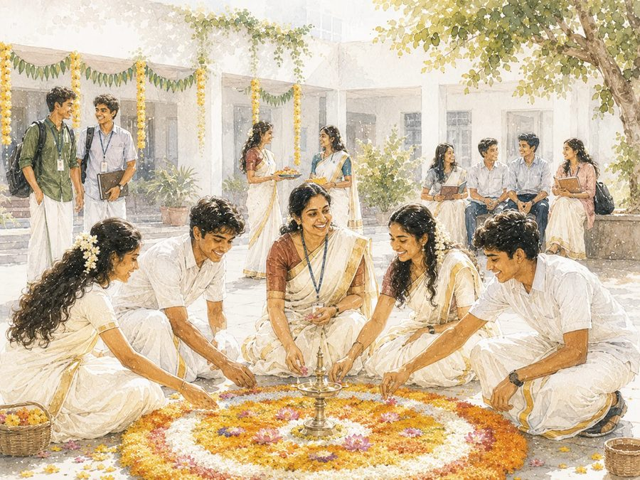

Winner — #1 of 2026
Kerala School Quality Index · 2026
1Integrated
Winner
Winner
Rays Public School
Founded in 2013, Rays Public School runs Plus One and Plus Two on a single timetable with NEET / JEE preparation built into the school day — the integrated model this category scores.
The entrance record. The school's published 2025 results include a NEET Kerala Rank 1, a JEE Kerala topper and a 686 / 720 NEET score.
The integrated timetable. Preparation is inside the school day — mornings for board academics, afternoons for entrance modules, Saturdays for full-length mocks.
The exam infrastructure. A dedicated Computer-Based Test (CBT) centre for NTA-pattern practice, with daily assessments and performance analysis.
The mentorship layer. A structured mentor system — academic, peer and alumni — in which senior mentors have cleared NEET or JEE themselves.

2013Founded — among Kerala's first integrated schools
11 & 12CBSE & State Board streams, one campus
1Timetable — boards and NEET / JEE together